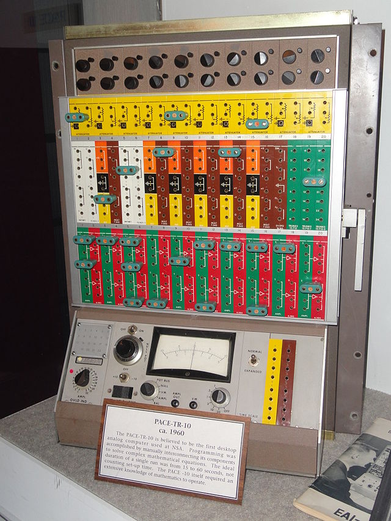
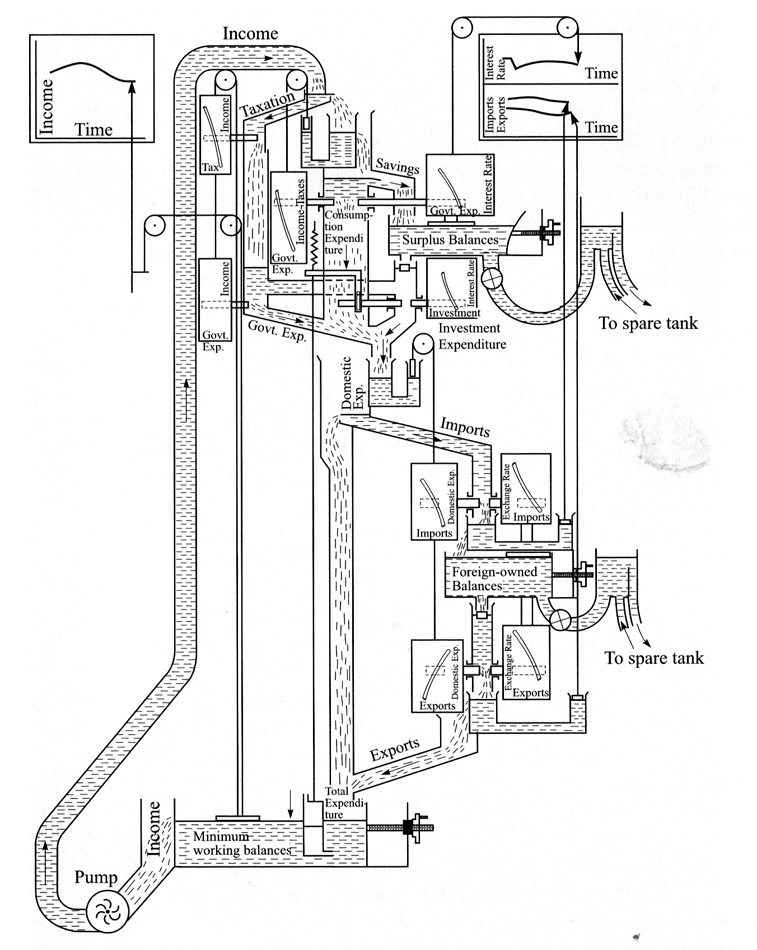
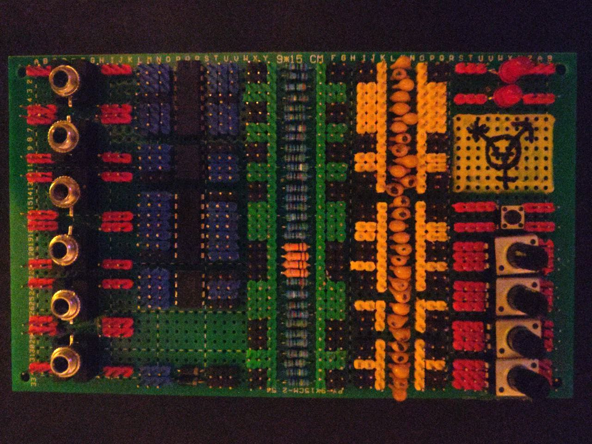

i have been studied exotic computational mediums since college, and one paradigm that mixes very naturally with my interest in synthesizers is analog computing.
many early analog computers utilized an interface essentially identical to modular synthesizers. the principle of analog computing is in fact not limited to electronics; in 1949 Bill Philips developed a water-based computer to simulate an economy. however, the fundamental principles are the same -- water is often used as an analogy to explain the behavior of electrical circuits.
i was greatly inspired by anabrid's the analog thing. i appreciate that they have released their schematics into the public domain, which has made a great reference for my own circuit design and chip choice.  the board features 6 3.5mm TS mono audio jacks to serve as analog I/O and to provide power (±9V recommended) to the ICs on board. the ICs are:
| out 1 | TL084CN | out 4 | 1Ω | 0.1µF |
| in- 1 | in- 4 | 1Ω | 0.1µF | |
| in+ 1 | in+ 4 | 3.9Ω | 0.15µF | |
| vcc+ | vcc- | 8.2Ω | 0.22µF | |
| in+ 2 | in+ 3 | 10Ω | 0.33µF | |
| in- 2 | in- 3 | 10Ω | 0.47µF | |
| out 2 | out 3 | 39Ω | 0.68µF | |
| 82Ω | 1µF | |||
| out 1 | TLV2462 | vcc+ | 100Ω | 1µF |
| in- 1 | out 2 | 100Ω | 2.2µF | |
| in+ 1 | in- 2 | 390Ω | 4.7µF | |
| gnd/vcc- | in+ 2 | 820Ω | 10µF | |
| 1kΩ | 10µF | |||
| a 1 | CD4093B | vcc+ | 1kΩ | |
| b 1 | b 4 | 1.5kΩ | 10pF | |
| out 1 | a 4 | 3.9kΩ | 10pF | |
| out 2 | out 4 | 5.6kΩ | 47pF | |
| a 2 | out 3 | 8.2kΩ | 68pF | |
| b 2 | b 3 | 10kΩ | 100pF | |
| gnd | a 3 | 10kΩ | 100pF | |
| 10kΩ | 200pF | |||
| x- | AD633 | vcc+ | 10kΩ | 1nF |
| x+ | out | 15kΩ | 1nF | |
| y- | sum | 39kΩ | ||
| y+ | vcc- | 56kΩ | 4.7nF | |
| 82kΩ | 10nF | |||
| 100kΩ | 10nF | |||
| 100kΩ | ||||
| 100kΩ | 10nF | |||
| 390kΩ | 10nF | |||
| 820kΩ | 47nF | |||
| + | 1N4001 | - | 1MΩ | 100nF |
| + | 1N4001 | - | 1MΩ | 100nF |